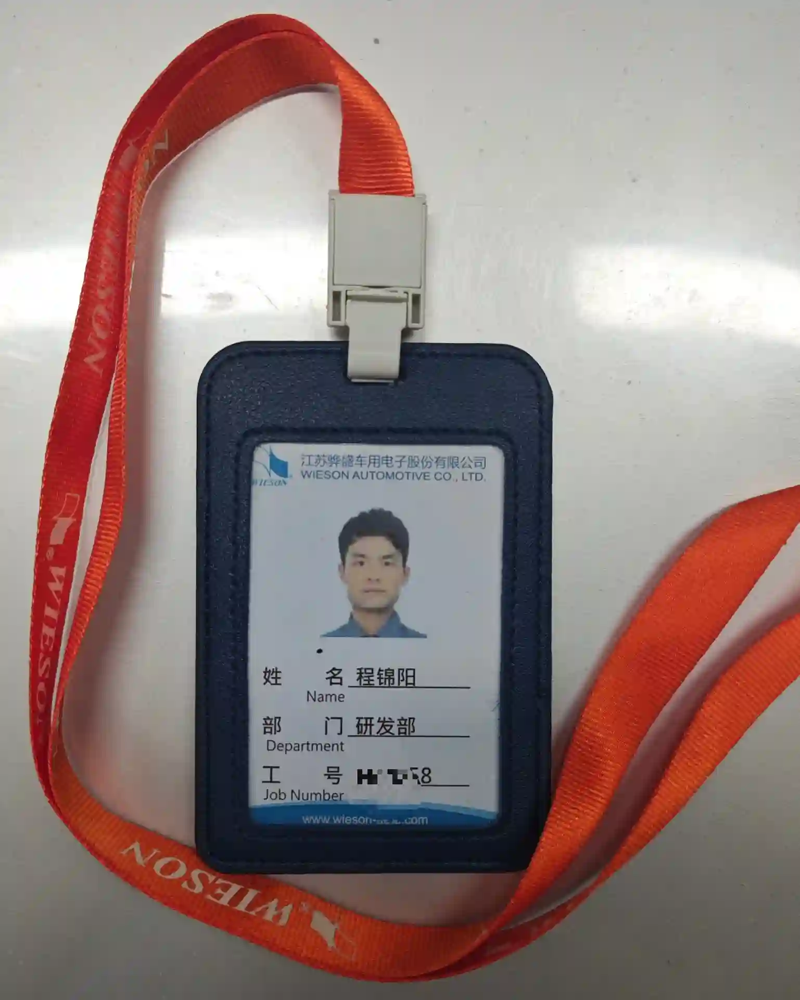
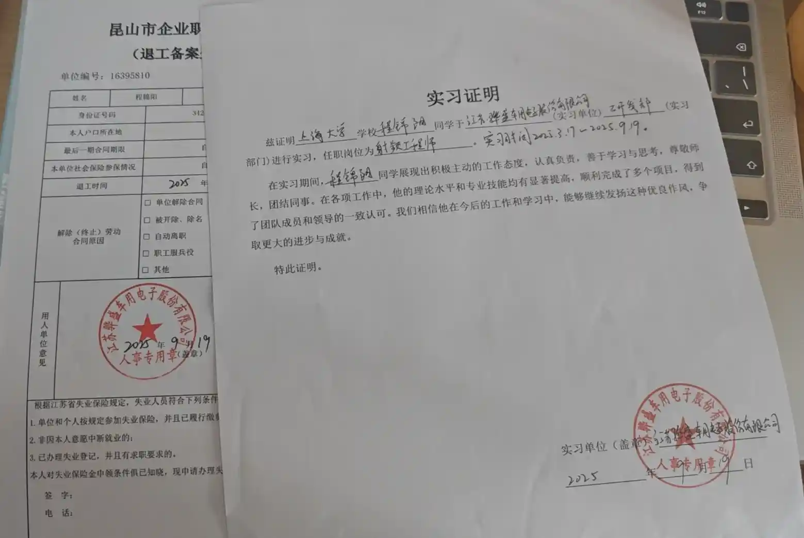
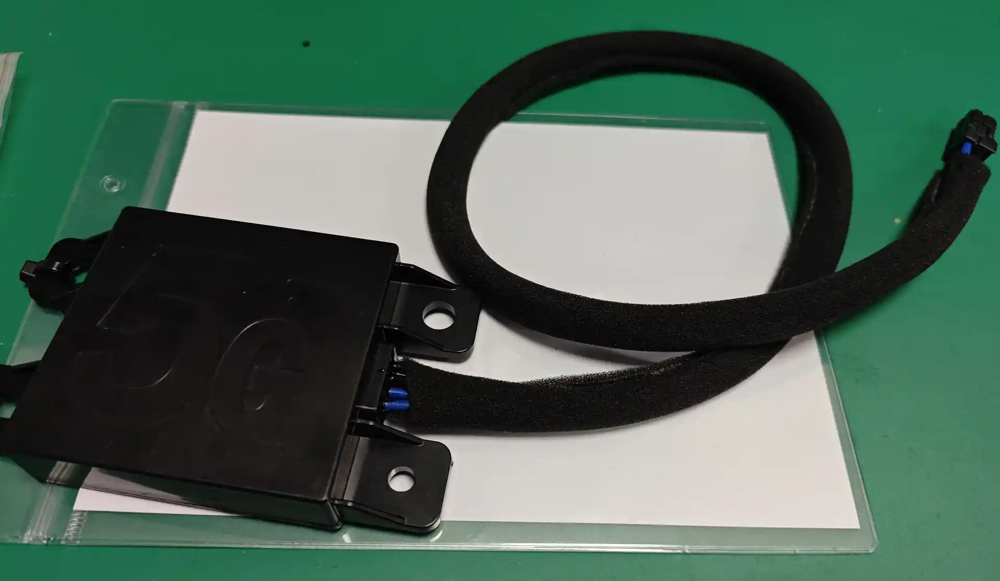
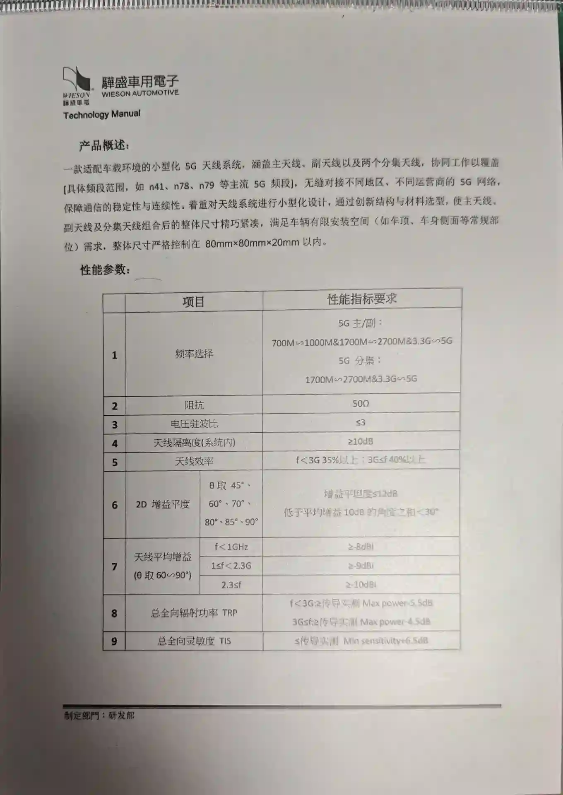
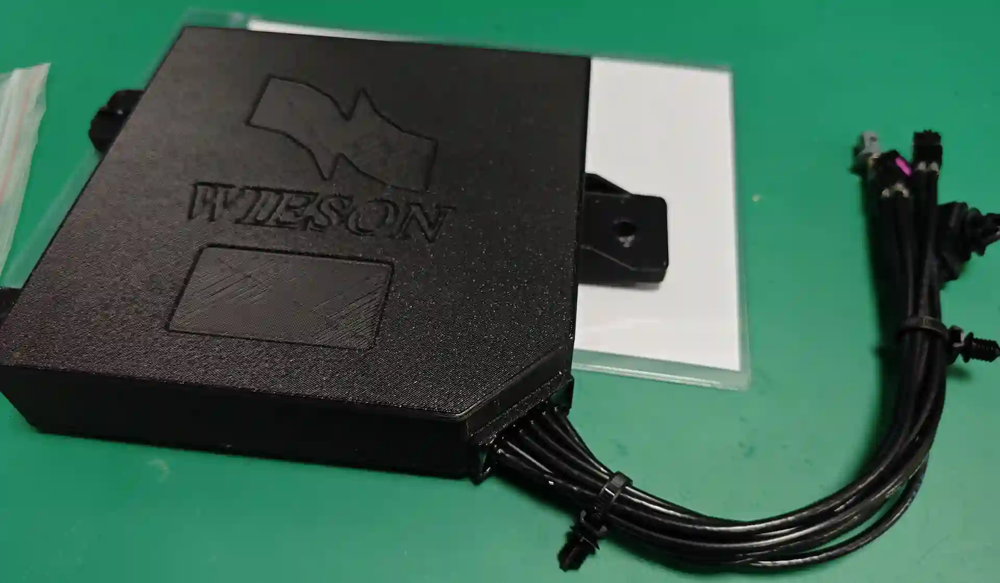
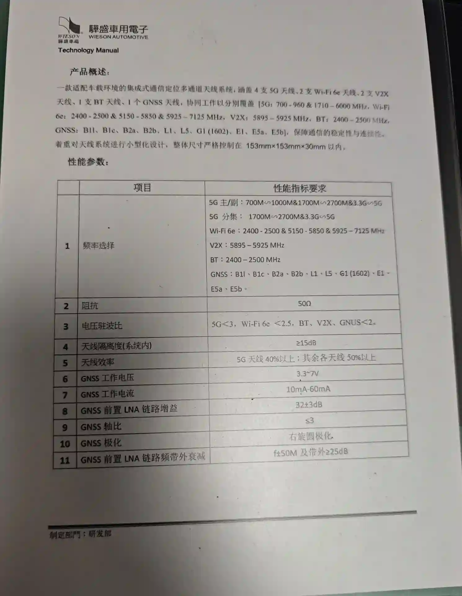
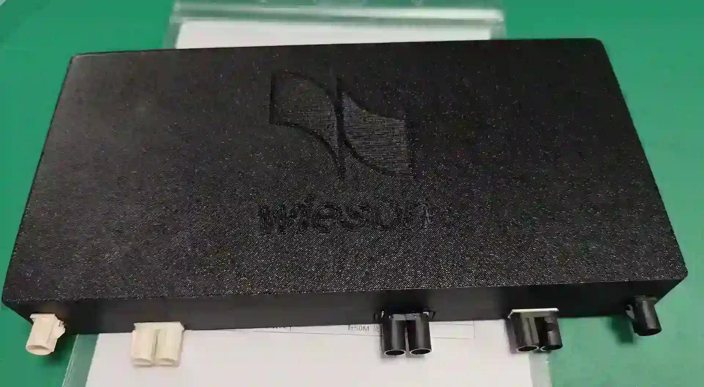
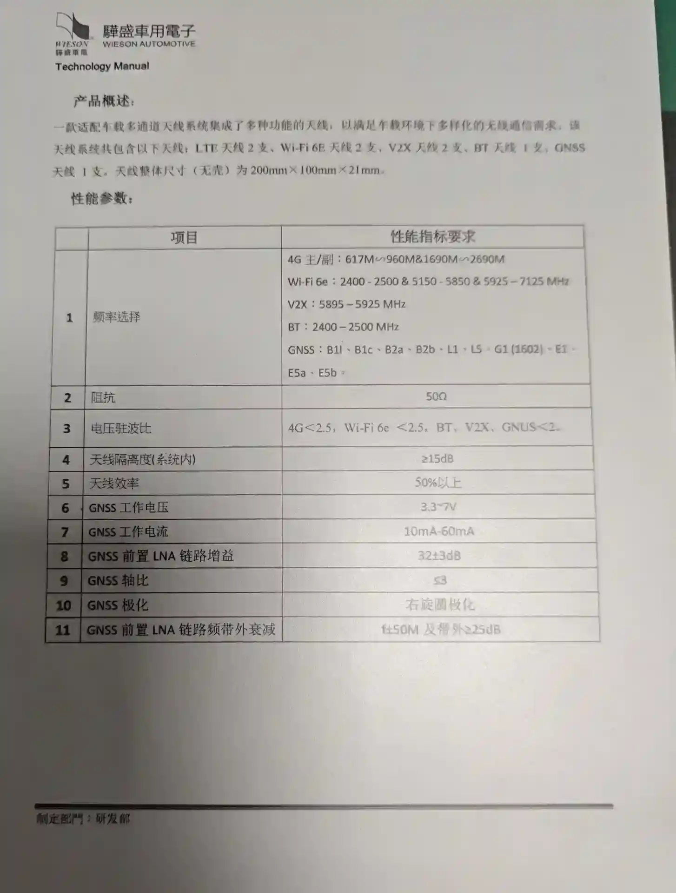
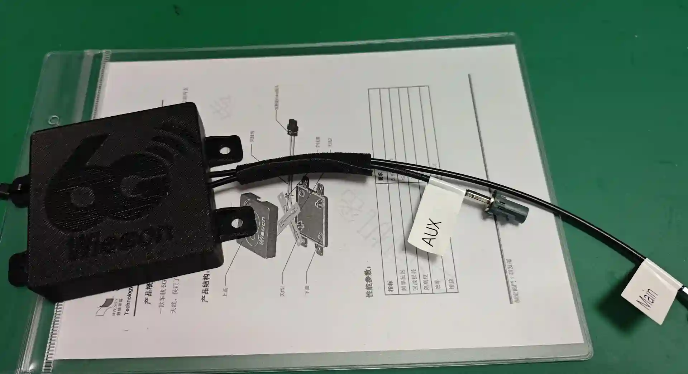
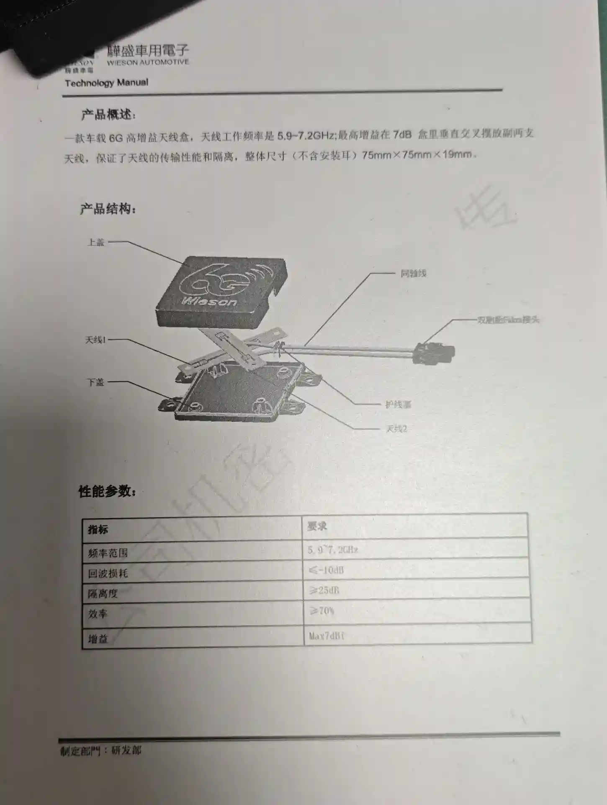

射频工程师（实习）
江苏骅盛车用电子股份有限公司 · 车载天线方向。两条设计主线： 板端接口款式的集成定位与通信多通道车载天线盒，以及 5.9 – 7.2 GHz 全向性高增益车载阵列天线；外加一条贯穿的实测与文档线。 其中板端接口方案已进入发明专利申请。
岗位职责/ Role
四段职责 —— 设计、实测、结构协同、文档，每一段都在下面的项目页留有对应产出。
在江苏骅盛车用电子股份有限公司担任射频工程师实习生，负责车载天线系统的设计与开发： 参与多个横向课题，从天线设计、仿真优化到实测验证，全程跟进产品开发流程。
这家企业的课题来源有两条并行的线：一条是在校承接的横向课题（2023.10 起）， 一条是在岗实习（2025.03 – 2025.09）。两者时间有重叠、对象是同一批车载天线产品， 因此本页把实习期内的任务与前后承接的课题分开列，避免把不属于这段周期的产出记到实习头上。
实习期的职责不止于「把指标做出来」。天线性能测试与数据分析、 协同结构团队解决工程集成问题、撰写设计文档、测试报告及专利申请文件 是写进岗位任务里的三件事，也是这段经历对我改变最大的部分。
- 任职单位
- 江苏骅盛车用电子股份有限公司车载天线方向
- 岗位
- 射频工程师（实习）
- 在岗周期
- 2025.03 – 2025.09约半年
- 工作形式
- 企业实习与在校横向课题同期
- 任务类型
- 天线设计 · 仿真 · 实测板端接口天线盒 / 阵列天线
- 协同界面
- 结构团队工程集成问题
- 交付形态
- 样机 · 数据 · 文档 · 申请文件
- 验证手段
- 微波暗室 · 矢量网络分析仪噪声分析仪器
工作内容/ Responsibilities
两条设计主线，一条贯穿的测试与文档线。
实习期内 · 2025.03 – 2025.09
- 主线 A · 板端接口款式的集成定位与通信多通道车载天线盒 —— 把安装接口从壳体侧移到板端， 重排盒内通道布局，在提升集成度与装配便利性的同时维持多通道隔离；集成的定位与通信通道覆盖 4G LTE / Wi-Fi 6E / BT / V2X / GNSS。技术方案以发明专利申请 CN202511158479.6（「一种多通道车载天线盒」）提交。结构方案与通道布局见 P-03 · 板端接口式车载天线盒。
- 主线 B · 5.9 – 7.2 GHz 频段全向性高增益车载阵列天线 —— 在车顶受限的安装高度内用阵列 换取增益，同时维持水平面全向覆盖；增益与方向图平坦度互为代价，是这段任务里最难的一处折中。 阵列排布与实测指标见 P-05 · 高增益全向车载阵列天线（专利申请中）。
- 贯穿线 · 测试、协同与文档 —— 完成天线性能测试与数据分析；协同结构团队解决工程集成问题； 撰写设计文档、测试报告及专利申请文件。
同一家企业在实习前后承接的横向课题
前两项完成于实习之前，第三项与实习期部分重叠。它们同在骅盛的车载天线方向上， 构成实习期任务的技术起点 —— 板端接口款式是在整盒集成方案之后的一次接口形态改动。
- 紧凑型低剖面车载 5G MIMO 天线（2023.10 – 2024.08）—— 主天线、副天线与 2 支 MIMO 天线的 低剖面低互耦方案；成果以第一作者发表于 IEEE AWPL，并转化为发明专利 CN202411549247.9。详见 P-01。
- 集成定位与通信多通道的车载天线盒（2024.07 – 2025.04）—— 单盒集成 5G / Wi-Fi 6E / BT / V2X / GNSS 多类型天线，完成设计、仿真、加工与实测闭环，转化为发明专利 CN202510483710.2。 详见 P-02。
- GNSS 天线前端射频 LNA 链路设计与调试（2025.03 – 2025.06）—— 「独立滤波 — 分级放大 — 合路再放大」 架构下的噪声系数与增益分配调试。详见 P-06。
工具与测试手段
交付产出/ Deliverables
招聘方的三级下钻路径：经历（本页）→ 技术细节（项目页）→ 知识产权（专利清单）。
板端接口天线盒与 5.9 – 7.2 GHz 阵列天线，各完成设计、仿真与实测。
CN202511158479.6「一种多通道车载天线盒」，板端接口款式，申请中。
全向性高增益车载阵列天线；方向图与增益指标在 P-05 逐项给出。
在同一家企业累计设计天线产品十余种，并参与射频链路设计与调试工作。
- 天线样机与结构配合方案 —— 板端接口款式的多通道车载天线盒、5.9 – 7.2 GHz 全向阵列天线。
- 性能实测数据与分析 —— 微波暗室与矢量网络分析仪测试，仿真值收敛为可交付的实测结论。
- 设计文档与测试报告 —— 面向结构团队与后继接手人的可复现记录。
- 专利申请文件 —— 期内 1 项；连同实习前两项课题，共 3 项发明专利在公司名下推进。
另有 P-01（IEEE AWPL 第一作者 + 发明专利）与 P-02（发明专利）完成于同一家企业的在校横向课题期，不计入本段实习产出。
佐证图档/ Evidence
在职与实习凭证各 1 份，天线样机与报告截图各 4 组；点击放大，滚轮缩放、拖拽平移，方向键翻页。










FIG 01
凭证类图档只做存在性佐证，其上的编号、姓名与二维码等字段不在页面文字中复述； 四组天线图档为样机实物与报告页面截图，与具体课题的对应关系在各项目页说明。
收获与判断/ Takeaways
这半年改变的是验收标准，不是软件熟练度。
最大的变化是把评价天线的那把尺子换掉了：从「做出满足指标的天线」， 变成「交付能被产线装配、能被结构团队接住的产品」。
- 指标是必要条件，不是交付物 —— 板端接口这个决定对增益本身没有收益， 它买回来的是整车装配工序与整机布局的余量。天线的价值要按系统收益评估，而不按单端口曲线评估。
- 全向与增益是一对此消彼长的约束 —— 安装高度锁死口径之后，阵列换来的是峰值增益， 付出的是水平方向的起伏。盯住最差的覆盖角比盯住最好的点更有用。
- 实测负责把乐观值收敛成能签字的数 —— 仿真里的材料、公差与装配间隙不会自动出现， 暗室与矢网的数据才是能被别人引用的那一份。数据处理属于设计闭环，不属于附录。
- 文档是接口，不是收尾 —— 设计文档、测试报告、专利申请文件写清楚，结构团队与后继接手的人 就不需要来问我。写权利要求的过程反过来暴露了方案真正的创新点在哪。
- 责任边界要讲明白 —— 有文档可查的责任止于样机指标、实测数据与三份文件； 再往后的工序我不替它记功。知道自己交付到哪里为止，比多写几条职责更有信息量。
这段经历之后，我进入卫星整星与单机 EMC、磁、力学、真空热试验体系（2025.11 至今）， 负责的对象从「一副天线的指标」变成「一台整机的兼容性证据」。 在骅盛养成的习惯 —— 以实测数据与可复现文档作为交付终点 —— 是这两段工作之间唯一连贯的部分。
关联：工作经历总览 · 代表性项目 · 论文与专利 · aeayang@163.com